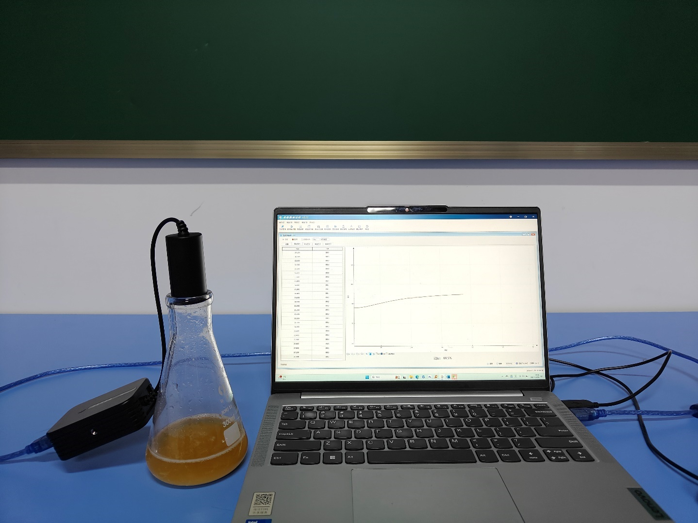
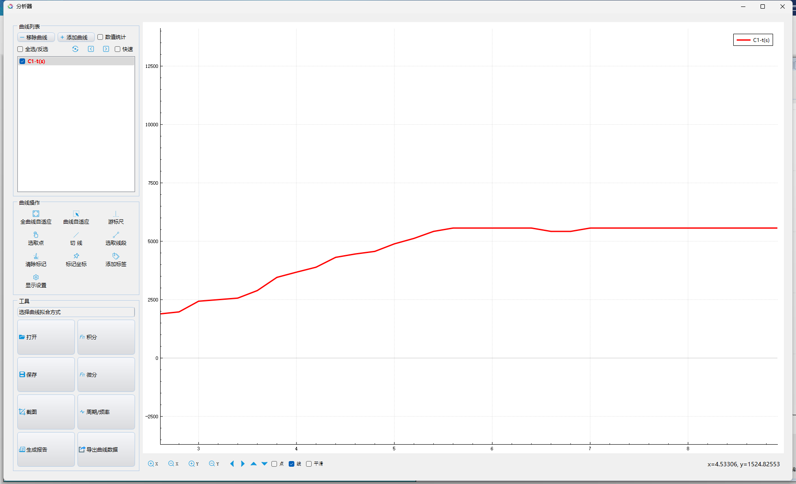

实验六十三 检测酵母菌无氧呼吸时酒精浓度的变化
【实验目的】
学生能够以酵母菌在无氧环境下的呼吸实验现象为基础，形成简单的酵母菌呼吸原理相关的生物学概念
【实验原理】
有氧呼吸方程式：C6H12O6+6O2+6H2O→6CO2+12H2O+大量能量
有氧呼吸方程式：C6H12O6→2C2H5OH+2CO2+少量能量
【实验器材】
酒精传感器、锥形瓶、质量分数5%的葡萄糖溶液、酵母菌、计算机
【实验装置图】

【实验步骤】
1.实验开始前，分小组熟悉实验装置搭建，酒精传感器与计算机相连。
2.酵母菌活化后，快速用注射器抽取一管混合液，让酵母菌进行无氧呼吸。
3.用酒精传感器探头部分置于注射器上方，点击计算机上的开始测量采集数据。
